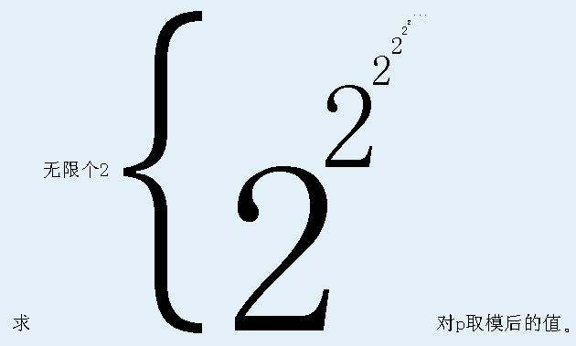

根据一些书上的记载，上帝的一次失败的创世经历是这样的：
第一天， 上帝创造了一个世界的基本元素，称做“元”。
第二天， 上帝创造了一个新的元素，称作“α”。“α”被定义为“元”构成的集合。容易发现，一共有两种不同的“α”。
第三天， 上帝又创造了一个新的元素，称作“β”。“β”被定义为“α”构成的集合。容易发现，一共有四种不同的“β”。
第四天， 上帝创造了新的元素“γ”，“γ”被定义为“β”的集合。显然，一共会有16种不同的“γ”。
如果按照这样下去，上帝创造的第四种元素将会有65536种，第五种元素将会有2^65536种。这将会是一个天文数字。
然而，上帝并没有预料到元素种类数的增长是如此的迅速。他想要让世界的元素丰富起来，因此，日复一日，年复一年，他重复地创造着新的元素……
然而不久，当上帝创造出最后一种元素“θ”时，他发现这世界的元素实在是太多了，以致于世界的容量不足，无法承受。因此在这一天，上帝毁灭了世界。
至今，上帝仍记得那次失败的创世经历，现在他想问问你，他最后一次创造的元素“θ”一共有多少种？
上帝觉得这个数字可能过于巨大而无法表示出来，因此你只需要回答这个数对p取模后的值即可。
你可以认为上帝从“α”到“θ”一共创造了10^9次元素，或10^18次，或者干脆∞次。
一句话题意：
